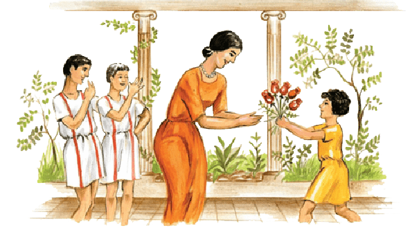

VÍLLA ET HORTVS
I
Ecce vīlla et hortus Iūliī. Iūlius in magnā vīllā habitat. Pater et māter et trēs līberī in vīllā habitant. Iūlius et Aemilia trēs līberōs habent: duōs fīliōs et ūnam fīliam — nōn duās fīliās.
In vīllā multī servī habitant. Dominus eōrum est Iūlius: is multōs servōs habet. Ancillae quoque multae in vīllā habitant. Domina eārum est Aemilia: ea multās ancillās habet.
Iūlius in vīllā suā habitat cum magnā familiā. Pater et māter habitant cum Mārcō et Quīntō et Iūliā. Iūlius et Aemilia in vīllā habitant cum līberīs et servīs et ancillīs.
Vīlla Iūliī in magnō hortō est. In Italiā sunt multae vīllae cum magnīs hortīs. In hortīs sunt rosae et līlia. Iūlius multās rosās et multa līlia in hortō suō habet. Hortus Iūliī pulcher est, quia in eō sunt multae et pulchrae rosae līliaque.
Aemilia fēmina pulchra est. Syra nōn est fēmina pulchra, neque pulcher est nāsus eius, sed foedus est. Syra, quae bona ancilla est, nāsum magnum et foedum habet. Iūlius est vir Aemiliae, fēminae pulchrae. Iūlius Aemiliam amat, quia ea pulchra et bona fēmina est. Aemilia Iūlium virum suum amat et cum eō habitat. Pater et māter līberōs suōs amant. Iūlius nōn sōlus, sed cum Aemiliā et cum magnā familiā in vīllā habitat.
In vīllā sunt duo ōstia: ōstium magnum et ōstium parvum. Vīlla duo ōstia et multās fenestrās habet.

In vīllā Iūliī magnum ātrium est cum impluviō. Quid est in impluviō? In eō est aqua. In ātriō nūllae fenestrae sunt.
Etiam peristȳlum magnum et pulchrum in vīllā est. Peristȳlum est vocābulum Graecum. In vīllīs Graecīs et Rōmānīs magna et pulchra peristȳla sunt. Estne impluvium in peristȳlō? Id nōn in peristȳlō, sed in ātriō est. In peristȳlō parvus hortus est.
In vīllā sunt multa cubicula. Quīntus in cubiculō parvō dormit. Estne magnum cubiculum Mārcī? Id quoque parvum est. Iūlius et Aemilia in cubiculō magnō dormiunt. Ubi dormiunt servī? Iī quoque in cubiculīs dormiunt. Suntne magna eōrum cubicula? Ea nōn magna sunt, et multī servī in ūnō cubiculō dormiunt. Etiam ancillae multae in ūnō cubiculō dormiunt, neque eae magna cubicula habent. —

Aemilia in peristȳlō est. Estne sōla? Aemilia sōla nōn est: līberī cum eā in peristȳlō adsunt. Iūlius abest. Aemilia sine virō suō Iūliō in vīllā est. Ubi est Iūlius? In oppidō Tūsculō est sine Aemiliā, sed cum servīs quattuor.
II
Aemilia cum Mārcō, Quīntō Iūliāque in peristȳlō est. Iūlia rosās pulchrās in hortō videt et ab Aemiliā discēdit. Iam ea cum Aemiliā nōn est. Aemilia eam nōn videt. Puella in hortō est.
Aemilia imperat: “Mārce et Quīnte! Iūliam vocāte!”
Mārcus et Quīntus Iūliam vocant: “Iūlia! Venī!” sed Iūlia eōs nōn audit neque venit.
Iūlia puerōs vocat: “Mārce et Quīnte! Venīte! Hīc multae rosae sunt.”
Puerī Iūliam audiunt, neque iī ab Aemiliā discēdunt.
Quīntus: “Carpe rosās, Iūlia!”
Iūlia rosās carpit et cum quīnque rosīs ex hortō venit.

Iūlia: “Vidē, māter! Vidēte, puerī! Vidēte rosās meās!” Iūlia laeta est: rosae eam dēlectant.
Aemilia: “Ecce puella pulchra cum rosīs pulchrīs!” Verba Aemiliae Iūliam dēlectant.
Mārcus: “Rosae pulchrae sunt; puella sine rosīs pulchra nōn est!” Verba Mārcī Iūliam nōn dēlectant!
Aemilia (īrāta): “Tacē, puer improbe! Iūlia puella pulchra est — cum rosīs et sine rosīs.”
Iūlia: “Audīte, Mārce et Quīnte!”
Mārcus: “Māter nōn videt nāsum tuum foedum!”
Mārcus et Quīntus rīdent: “Hahahae!”
Iūlia: “Audī, mamma, puerī etiam mē rīdent!”
Iūlia plōrat et cum ūnā rosā ab iīs discēdit.
Aemilia: “Tacēte, puerī improbī! Nāsus Iūliae foedus nōn est. Discēdite ex peristȳlō! Sūmite cēterās rosās eāsque in aquā pōnite!”
Puerī cēterās quattuor rosās sūmunt et cum iīs discēdunt.
Aemilia, quae iam sōla est in peristȳlō, ancillās vocat: “Dēlia et Syra! Venīte!”
Dēlia et Syra ex ātriō veniunt. Aemilia eās interrogat: “Suntne puerī in ātriō?”
Dēlia respondet: “In ātriō sunt.”
Aemilia: “Quid agunt Mārcus et Quīntus?”
Dēlia: “Puerī aquam sūmunt ex impluviō...”
Syra: “...et rosās in aquā pōnunt.”
Hīc domina et ancillae puerōs audiunt ex ātriō: Quīntus plōrat et Mārcus rīdet.
Aemilia: “Quid iam agunt puerī? Age, Dēlia! discēde et interrogā eōs!” Dēlia ab Aemiliā et Syrā discēdit.
Aemilia Syram interrogat: “Ubi est Dāvus?”
Syra respondet: “In oppidō est cum dominō.”
Dēlia ex ātriō venit et dominam vocat: “Venī, ō domina! Venī!”
Aemilia: “Quid est, Dēlia?”
Dēlia: “Quīntus est in impluviō!”
Aemilia: “In impluviō? Quid agit puer in impluviō?”
Dēlia: “Aquam pulsat et tē vocat.”
Aemilia: “Quid agit Mārcus?”
Dēlia: “Is rīdet, quia Quīntus in aquā est!”
Aemilia: “Ō, puer improbus est Mārcus! Agite! Iūlium vocāte, ancillae!”
Syra: “Sed dominus in oppidō est.”
Aemilia: “Ō, iam rūrsus abest Iūlius!”
Dēlia: “Age! Venī, domina, et Mārcum verberā!”
Quid agit domina? Domina īrāta cum ancillīs ex peristȳlō discēdit.